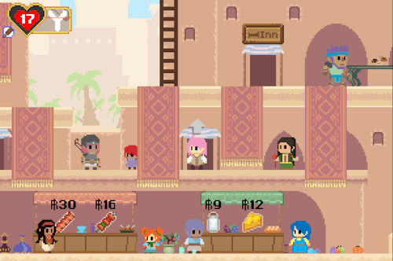
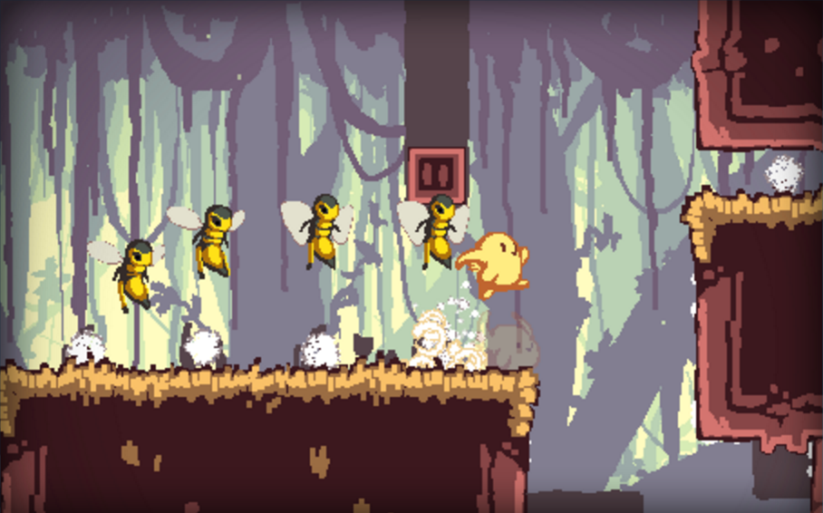
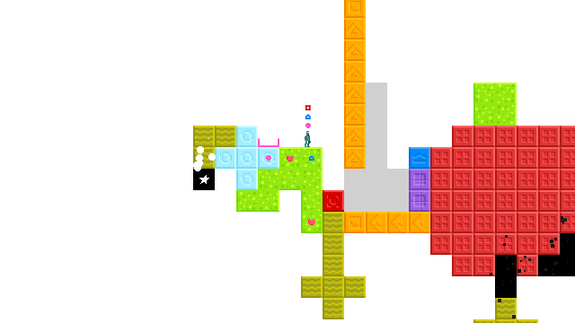
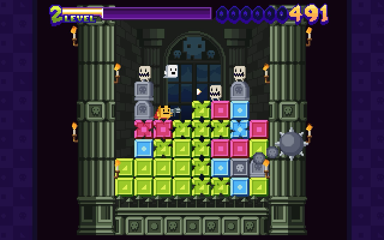
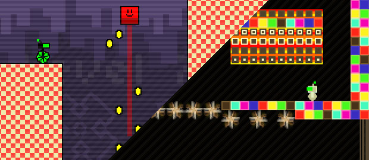
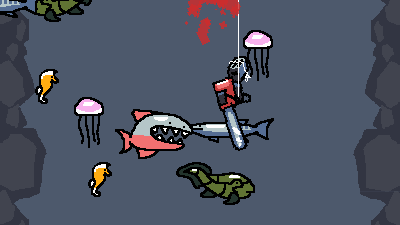
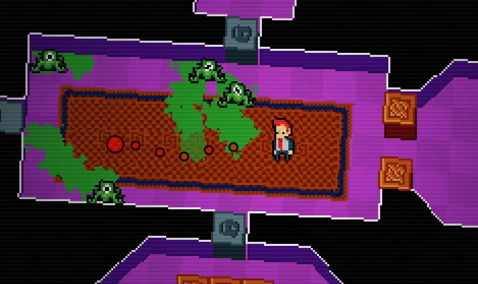

FlashPunk Game Engine
FlashPunk was a free ActionScript 3 game engine designed for developing 2D Flash games. It is no longer maintained, but had a very good run with thousands of developers using it to make many games.
When using FlashPunk, you could pull yourself out of the Flash environment, avoiding some of its clumsiness. For example: it had its own raster-based display list, z-sorted rendering, and no event handlers.
Features
- Core game loop and frame speed management
- Graphics rendering for sprites, animations, tilesets, and backdrops
- Collision system for rectangles, grids, and pixel-perfect shapes
- Powerful motion system, tweening, curves, and paths
- Simple audio system with volume, panning, and crossfading
- Particle effect system with optimized rendering
- Keyboard and mouse input without event handlers
- Built-in debugger allowing you to pause and run commands while testing
Games Made in FlashPunk
There are thousands of games made with FlashPunk. Here are a few of my favorites:
Phoenotopia — Quells

Offspring Fling — Kyle Pulver

Starseed Pilgrim — droqen

Super Puzzle Platformer — Andrew Morrish

Give Up Robot 1 & 2 — Matt Thorson

Radical Fishing — Vlambeer

Drunken Assassin — Noel Berry
